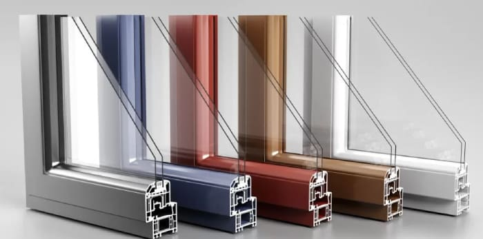

Sobre Vidrio y Aluminio Gomez
Ubicada en San Pablo Autopan, Soluciones en Vidrio y Aluminio Gomez trae para el mercado lo mejor para su hogar y negocio. Fundada en 2008, soluciones en vidrio y aluminio cuenta con canceleria de aluminio, fachadas y sistemas de cristal templado, entre otras cosas.
Nuestra misión es: "Proporcionar eficiencia, economia y calidad a nuestros clientes".
Ofrecemos profesionales experimentados que están constantemente observando los cambios y movimiento en el mundo de la canceleria, para así ofrecer a nuestros clientes las últimas tendencias. La constante actualizacion por parte de nuestros trabajadores, nos hace brindarle excelencia y agilidad, garantizando calidad y satisfacción de nuestros clientes.
Nuestra Ubicacion
Nuestro establecimiento esta ubicado en San PabloAutopan
Nuestro Distintivo
- Atencion personalizada
- Presupuestos Flexibles
- Localizacion
- Profesionales calificados
- Puntualidad
- Limpieza e Higiene
- Trabajos Garantizados